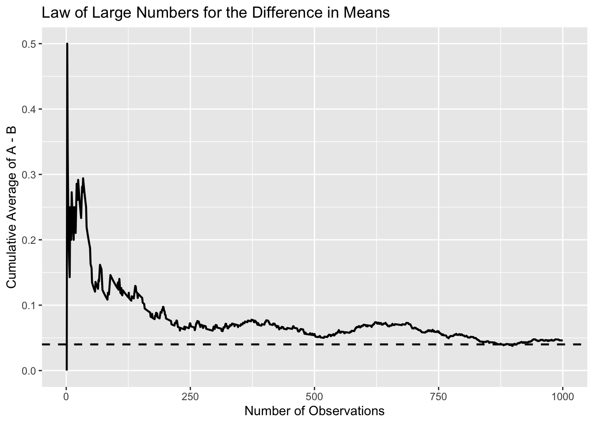
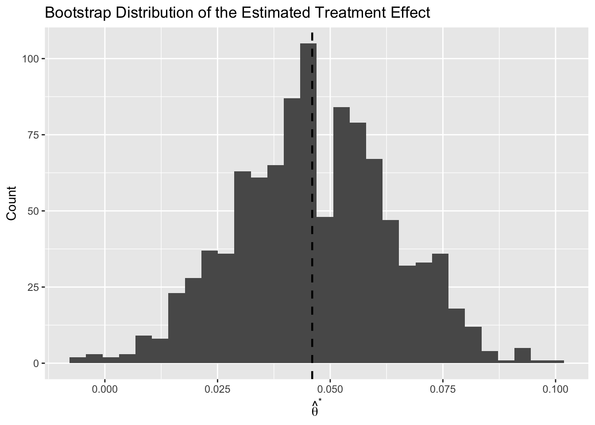
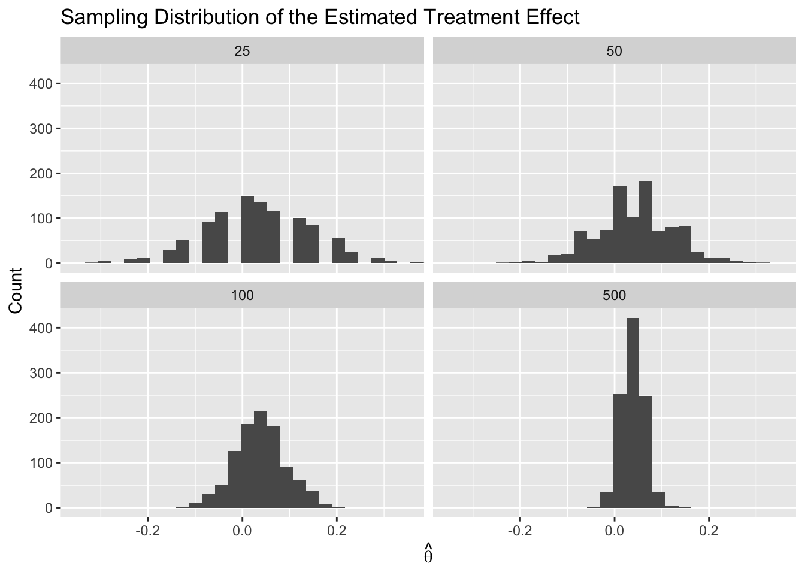

| Group | Sample Size | Observed Sign-Up Rate |
|---|---|---|
| A | 1000 | 0.218 |
| B | 1000 | 0.172 |
A/B Testing a Call to Action
Simulating Key Ideas from Classical Frequentist Statistics
Introduction
A website’s landing page often includes a short message encouraging visitors to sign up for a newsletter. Suppose I want to test whether different wording changes the sign-up rate. In version A, the call to action reads “Sign up for our newsletter here!” In version B, it reads “Stay up to date by signing up!”
To compare the two versions, I will run an A/B test. Visitors are randomly assigned to see one of the two CTAs, and I then compare the sign-up rates across the two groups. Because assignment is random, differences in outcomes can be interpreted as evidence about the effect of the CTA wording rather than pre-existing differences between visitors.
In this post, I use a simulated A/B test to illustrate several core ideas from classical frequentist statistics, including the Law of Large Numbers, bootstrap standard errors, the Central Limit Theorem, hypothesis testing, regression, and the danger of peeking at results too often.
The A/B Test as a Statistical Problem
Each visitor either signs up or does not sign up, so it is natural to model each outcome as a Bernoulli random variable. Let (_A) denote the probability that a visitor signs up after seeing CTA A, and let (_B) denote the probability of signing up after seeing CTA B.
The quantity of interest is the difference in sign-up probabilities:
[ = _A - _B. ]
If (> 0), CTA A performs better. If (< 0), CTA B performs better. In practice, we do not observe (_A) and (_B) directly, so we estimate them using the sample proportions from the two groups.
Because the outcome is binary, the sample mean in each group is simply the observed sign-up rate. That means our estimator of the treatment effect is
[ = {X}_A - {X}_B = _A - _B. ]
This estimator is simple and intuitive: it measures how much higher the observed sign-up rate is in one group than in the other.
Simulating Data
In a real A/B test, the true sign-up probabilities would be unknown. For this exercise, I set them manually so that I can study how the estimator behaves when the truth is known. I assume that (_A = 0.22) and (_B = 0.18), so the true treatment effect is
[ = 0.22 - 0.18 = 0.04. ]
Then I simulate 1,000 visitors for each group. Each observation is a Bernoulli draw equal to 1 if the visitor signs up and 0 otherwise.
The observed sign-up rates are close to the true probabilities, but they are not exactly the same. That difference reflects sampling variation, which is the central reason statistical inference is needed.
The Law of Large Numbers
The Law of Large Numbers says that as the sample size grows, the sample mean converges to the population mean. In this A/B testing context, that idea gives us confidence that the estimator ( = {X}_A - {X}_B) will get closer to the true treatment effect () when the sample becomes large.
To illustrate this, I compute the element-wise difference between the simulated CTA A and CTA B draws, and then calculate the cumulative average of those differences.
diff_vec <- A - B
cum_avg <- cumsum(diff_vec) / seq_along(diff_vec)
lln_df <- tibble(
n = 1:1000,
cumulative_average = cum_avg
)
At the beginning of the sample, the cumulative average moves around quite a bit because each new observation has a large influence. As more observations are added, the running average settles down and moves closer to the true difference of 0.04.
The main lesson is that larger samples reduce noise. Individual observations can be volatile, but the average of many observations becomes much more stable. This is why large samples are so valuable in A/B testing.
Bootstrap Standard Errors
A point estimate tells us where the treatment effect appears to be, but it does not tell us how precise that estimate is. To measure uncertainty, I use the bootstrap, which is a resampling method that estimates the variability of a statistic without relying entirely on a closed-form formula.
The bootstrap works by resampling with replacement from the observed data, recomputing the statistic on each resample, and then examining the distribution of those resampled estimates. The standard deviation of the bootstrapped estimates serves as an estimate of the standard error.
set.seed(456)
n_boot <- 1000
boot_thetas <- numeric(n_boot)
for (i in 1:n_boot) {
A_star <- sample(A, size = n_A, replace = TRUE)
B_star <- sample(B, size = n_B, replace = TRUE)
boot_thetas[i] <- mean(A_star) - mean(B_star)
}
bootstrap_se <- sd(boot_thetas)
analytical_se <- sqrt(
p_hat_A * (1 - p_hat_A) / n_A +
p_hat_B * (1 - p_hat_B) / n_B
)
ci_lower <- theta_hat - 1.96 * bootstrap_se
ci_upper <- theta_hat + 1.96 * bootstrap_se| Quantity | Value |
|---|---|
| Observed Estimate | 0.0460 |
| Bootstrap Standard Error | 0.0174 |
| Analytical Standard Error | 0.0177 |
| 95% CI Lower Bound | 0.0119 |
| 95% CI Upper Bound | 0.0801 |

The bootstrap standard error is usually very close to the analytical standard error in this setting. That is reassuring, because it shows that the resampling approach and the Bernoulli formula give similar answers.
Using the bootstrap standard error, I construct a 95% confidence interval for the treatment effect. In frequentist terms, this means that if I repeated the full sampling and interval-construction procedure many times, about 95% of the resulting intervals would contain the true value of ().
The Central Limit Theorem
The Central Limit Theorem states that, regardless of the shape of the underlying population distribution, the sampling distribution of the sample mean becomes approximately Normal as the sample size grows. Since the difference in sample means is built from sample means, the same logic applies to ().
To illustrate this, I repeatedly simulate the estimator for four different sample sizes: (n {25, 50, 100, 500}). For each value of (n), I generate 1,000 estimates of () and examine their distribution.

The histograms show that when the sample size is small, the distribution of () can look rough and somewhat irregular. As the sample size increases, the distribution becomes smoother, more symmetric, and more bell-shaped.
This is exactly what the Central Limit Theorem predicts. Even though the underlying observations are Bernoulli rather than Normal, the estimator itself becomes approximately Normal when enough data are collected. That approximation is what makes large-sample inference possible.
Hypothesis Testing
The Central Limit Theorem gives us a way to perform a formal hypothesis test. I begin with the null hypothesis
[ H_0: = 0, ]
which says that the two CTAs have the same sign-up rate. The alternative hypothesis is
[ H_1: , ]
which says that the sign-up rates differ.
To test the null, I standardize the estimated treatment effect:
[ z = . ]
The logic is straightforward. First, the Central Limit Theorem tells us that () is approximately Normally distributed in large samples. Under the null hypothesis, the center of that distribution is 0. When I divide by the standard error, I obtain a statistic that is approximately distributed as a standard Normal random variable under the null. Once I know that reference distribution, I can compute a p-value.
Although this kind of procedure is sometimes loosely called a t-test, it is more accurate here to think of it as a large-sample z-test. The classical t-test arises from Normally distributed data with an estimated variance, which produces an exact t-distribution. In this setting the data are Bernoulli, not Normal, so the Normal approximation comes from the Central Limit Theorem instead. For large samples, however, the practical difference between the t-distribution and the standard Normal distribution is very small.
| Statistic | Value |
|---|---|
| Estimate | 0.0460 |
| Standard Error | 0.0177 |
| z Statistic | 2.6005 |
| p-Value | 0.0093 |
The p-value measures how surprising the observed estimate would be if the null hypothesis were true. A small p-value provides evidence against the null and suggests that the observed difference is unlikely to be due to sampling variation alone.
The T-Test as a Regression
The same two-group comparison can also be written as a simple linear regression. To do this, I stack the observations from the two groups into a single dataset. Let (Y_i) equal 1 if visitor (i) signs up and 0 otherwise, and let (D_i) equal 1 if the visitor saw CTA A and 0 if the visitor saw CTA B. Then I estimate the regression.
[ Y_i = _0 + _1 D_i + _i. ]
In this specification, (_0) is the expected sign-up rate for group B, because it is the mean outcome when (D_i = 0). The quantity (_0 + _1) is the expected sign-up rate for group A, because it is the mean outcome when (D_i = 1). Therefore, (_1 = _A - _B = ), so the coefficient on the treatment indicator is exactly the treatment effect of interest.
| term | estimate | std.error | statistic | p.value |
|---|---|---|---|---|
| (Intercept) | 0.1720 | 0.0125 | 13.7445 | 0.0000 |
| D | 0.0460 | 0.0177 | 2.5992 | 0.0094 |
The coefficient estimate on (D) is numerically identical to the difference in sample means computed earlier. The standard error and test statistic are also very similar, though they may differ slightly depending on the exact variance formula being used.
This equivalence matters because the regression framework generalizes naturally. In more complicated settings, I can add covariates, interactions, or additional treatment groups while still relying on the same basic logic.
The Problem with Peeking
Frequentist hypothesis testing assumes that the testing procedure is specified in advance. Problems arise when a researcher repeatedly checks the data during the experiment and stops as soon as a statistically significant result appears.
Suppose the true null hypothesis is correct: both CTAs have the same sign-up probability, so (_A = _B = 0.20). If I run only one test at the end of the study at the (= 0.05) level, the false positive rate should be about 5%. But if I test repeatedly after every 100 observations per group, then each additional look at the data is another opportunity to obtain a significant result purely by chance.
To show this, I simulate 10,000 experiments under the null hypothesis. In each experiment, I generate 1,000 observations for group A and 1,000 for group B, then perform a hypothesis test after every 100 observations per group. I record whether any one of the ten interim tests produces a p-value below 0.05.
peek_once <- function(pi_null = 0.20, total_n = 1000, step_n = 100) {
A_null <- rbinom(total_n, size = 1, prob = pi_null)
B_null <- rbinom(total_n, size = 1, prob = pi_null)
peek_points <- seq(step_n, total_n, by = step_n)
for (n in peek_points) {
pA_n <- mean(A_null[1:n])
pB_n <- mean(B_null[1:n])
theta_n <- pA_n - pB_n
se_n <- sqrt(
pA_n * (1 - pA_n) / n +
pB_n * (1 - pB_n) / n
)
z_n <- theta_n / se_n
p_n <- 2 * (1 - pnorm(abs(z_n)))
if (p_n < 0.05) {
return(TRUE)
}
}
return(FALSE)
}
set.seed(202)
n_simulations <- 10000
peek_results <- replicate(n_simulations, peek_once())
false_positive_rate <- mean(peek_results)| Quantity | Value |
|---|---|
| Nominal Type I Error | 0.0500 |
| Empirical False Positive Rate with Peeking | 0.2016 |
The empirical false positive rate is substantially larger than 0.05. That inflation happens because repeated testing increases the chance of eventually crossing the significance threshold even when no real effect exists.
In practice, this means that peeking can make an A/B test appear more convincing than it really is. If interim analyses are planned, researchers need methods that explicitly account for them. Otherwise, the nominal significance level no longer reflects the true probability of a false positive.
Conclusion
This simulated A/B test illustrates several key ideas from classical frequentist statistics. The Law of Large Numbers explains why the estimator becomes more stable as the sample grows, the bootstrap provides a practical way to estimate uncertainty, and the Central Limit Theorem justifies the Normal approximation used in hypothesis testing.
The analysis also shows that the same two-sample comparison can be expressed as a regression, which connects experimental analysis to a much broader empirical toolkit. Finally, the peeking simulation highlights an important practical warning: good inference depends not only on the data, but also on following a valid testing procedure.
Taken together, these results show why frequentist tools are so useful in A/B testing and why careful experimental design matters just as much as computation.